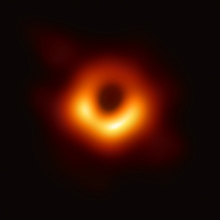
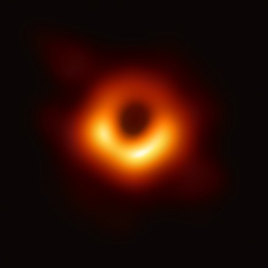
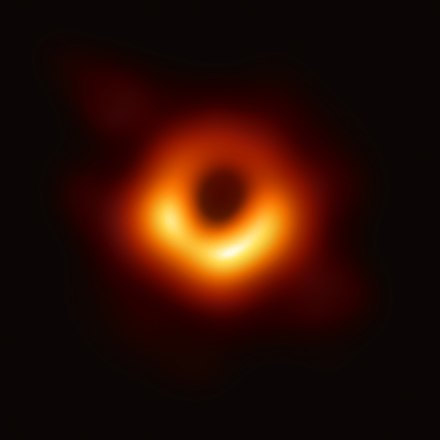

Key formulae
One Key formula is the Event Horizon equation, which identifies where the event horizon is. It is derived from the schwarzschild solution and is R = 2GM/c^2. In the equation 'R' represents The event horizon radius 'G' is the Gravitational constant and 'c' is the speed of light.
How did you find this?
Diagram

 
On the left there is a diagram of a spinning black hole.
On the right there is a real photo of a black hole
Above there is a photo of Messier 87* (real black hole)
Well you accessed inspect element